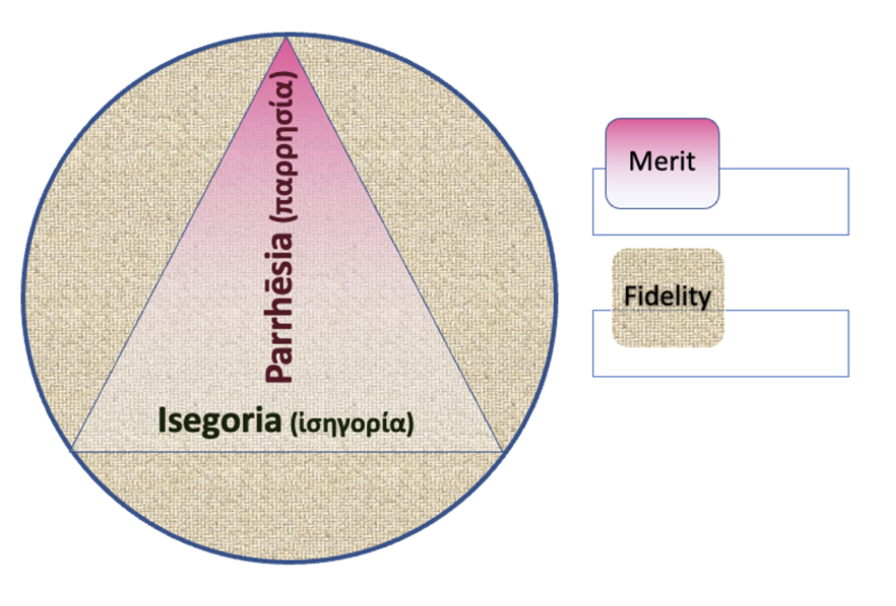

https://youtu.be/DxcE_PC5rgc
A while back I condensed a bunch of things I have been thinking about into four ideas which I explored with Peyton Bowman in these two discussions. In discussions with philosopher and school teacher Martin Turkis, it occurred to me it would be interesting to see if I could write them out in a summary form that could be understood by high school students and then see what Martin's students thought of the ideas. I think this is a better test of their worth than whether they can be published in some learned journal. We then talked about the upshot of it all in the discussion recorded above.
If you prefer to imbibe through audio only, here is the mp3 file.
Four ways to fix the world
Every society evolves unique ways for people to live together happily and productively. But they change over time. Modernity has eclipsed these four ideas.
Recovering them can make us happier and more productive.

As some Troppo readers may know, I regard most diagrams as a kind of disinformation. Unless that is, their representations add a little to understanding the relationships being depicted, which is (arguably) true here.Isegoría
Isegoria was a foundation of ancient Greek democracy. It meant not freedom but equality of speech.
Our institutions mostly fail to honour those of lower status. Yet, those people do most of the work, so they understand it best. Toyota understood this and empowered workers on the production line to measure their performance and endlessly optimise it, quadrupling their competitors’ labour productivity growth. Quadrupling!
More generally amongst those in charge — for instance in congress/parliament, in management and on mainstream media — university graduates outnumber the less educated 20 to one compared with 50:50 in the population.
Thus, many feel their voice and perspectives are unwelcome or unpersuasive in public speech. When they do participate, they’re often belittled as racist, sexist, xenophobic, etc.
Banishing their concerns from polite discourse isn’t just undemocratic; it sets off toxic culture wars. Those concerns should be welcomed in the search for democratic ‘win-win’ responses.
Parrhēsia
Our concept of freedom of speech helps build a ‘free market in ideas’. But we’re starting to learn that, if the best ideas are to win out, they need to be received and considered in good faith.
The ancient Greeks understood our weakness for flattery. And the way those in power demand to be flattered.
Their antidote was parrhēsia. Our idea of speaking truth to power is similar. But parrhēsia is richer.
- In parrhēsia, the speaker speaks to the powerful but without trying to please or manipulate them. By contrast, our own public speech is sodden with rhetoric (PR, spin, ‘comms’, ‘messaging’).
- We gain confidence in parrhēsiastic speech not because it persuades us that it’s more scientific based on objective evidence — as if we are the arbiter of truth — but because the speaker speaks from their heart as demonstrated by the fact that they put themselves at risk.
- It draws the powerful into relation with those they have power over. It imposes a duty on the powerful to overcome their vanity and so open themselves up to others’ perspectives, and so, reality.
Merit
We are so preoccupied with moral arguments for the justice of democracy that we downplay the other argument for democracy — that democratic decisions are better decisions.
Take Wikipedia. We love the paradox that allowing anyone to edit it ought to create chaos, and yet we get an encyclopaedia. But we don’t take the next step and ponder why. Wikipedia is a meritocracy. As authors contribute more and better work, they gain recognition, status and authority.
Democracies must be open to all. But, like Wikipedia, to work well they must weed out the self-seeking flatterers, the foolish and the boastful, to recognise and give greater authority to the best contributors.
How’s that working out then?
Fidelity
We love harnessing people’s self-interest to serve public needs. This is Adam Smith’s ‘invisible hand’. A farmer needn’t ask the public which crop they most need, because the information is embedded in the price they’re willing to pay. So the most profitable crop is also the most socially needed.
Likewise we think competition between politicians gives us good government and managers competing for promotion or executive bonuses gives us good management.
But we also need integrity. However cleverly designed, no social system is healthy without its participants buying-into its common purposes. No sophisticated order of human society — neither government, management, science, nor law — not even the market — can be healthy without also being a fiduciary order — with a ‘moral fabric’ binding people to serve one another.
The extent to which we can improve all aspects of human accomplishment — our productivity, expertise, cooperation and wellbeing — depends on our prior fidelity to common purposes. As businessman Charlie Munger says, “the highest form a civilization can reach is a seamless web of deserved trust.”
Competition
Competition is indispensable to a social order, just as it is to a game. Markets and government are games of a sort. They provide a framework of rules within which people compete.
However taken to extremes, competition breaks out of its bonds and undermines the ethical forces that bind us together, just as it can if competition in a game leads players to cheat. Today, extreme competition is breaking through these ethical boundaries, and that’s undermining the four qualities above.
So how can we build the society Wikipedia hints at, keeping competition vigorous where we need it, and yet protect isegoria, parrhēsia and the common understanding of our shared interests in cooperating? If we can, those winning the competition will be the best, not the most self-interested and ruthless.
Here are a few hacks from which to build.
De-competitive representation
We’re represented by a jury, not because we voted for its members but because they’re just like us. So we need to bring citizens’ juries into our politics — groups of people chosen to be just like us — to thrash out issues and decide what’s in our interests.
Where our elected representatives are hugely skewed towards highly educated, middle-class, prime working age, articulate and self-assertive people, a jury’s membership has a mix of abilities and temperaments just like us. That’s isegoría or equality of speech in action.
Further, there’s no competition to be won. So discussion is more deliberative, less performative and competitive. And it focuses more on the interests of the group than individuals or factions getting their way.
They speak and listen to improve their ideas and work towards a compromise everyone can live with. So there’s more room for honest, unembellished communication. Less incentive to flatter and ‘spin’ to the audience — either inside or outside the jury.
Citizens’ juries could lead debate on contentious issues, like abortion, gay marriage and greenhouse action, as they have in Ireland and the UK and France. They could act in myriad ways as a check and balance on our electoral system. They could consider and advise on citizen-initiated referendums — as they do in Oregon. They could supervise redistricting as they do in Michigan. Citizens' juries could sit as shadow houses of Congress or parliament as they do in East Belgium and Paris.
Bottom-up merit selection
If rules are followed, competition selects the best in sport. But most other competitions are set up by the powerful. They choose who gets hired or promoted. Voters decide which aspiring leaders please them most.
Now we trust juries to determine criminal guilt. So now imagine a situation where a jury — a random group of peers met, deliberated and held a secret ballot for who should be promoted, or made president — of the nation, a corporation or the Student Council.
Those chosen gain no authority to perpetuate their own power, preferences, prejudices or prowess. And the kind of merit selected would include service to those on the front lines and to the group more generally, rather than self-assertion and currying favour with the powerful. For those who seek the honour of representing students on the Student Council, in such a system helping others might work better than self-promotion.
This method of randomly selected ‘electors’ choosing the best is how Venitian leaders were chosen — from the Doge down to Senators and cabinet members. While other Italian cities suffered blood feud-driven crises, coups and civil wars, Venice enjoyed over five centuries of stable government until Napoleon invaded in 1797.
Building society upon the better angels of our nature
Both representation by sampling and ‘bottom-up merit selection’ interdict direct competition and moderate hierarchy — building it from the bottom up. Each gets the best from people, not by imposing rules and accountability from above, but because they feel how doing their best can be a gift between one another offered in faithfulness to the group.
They’re hacks — tried-and-true — that can revive isegoria, parrhēsia, true merit, and good faith to all.